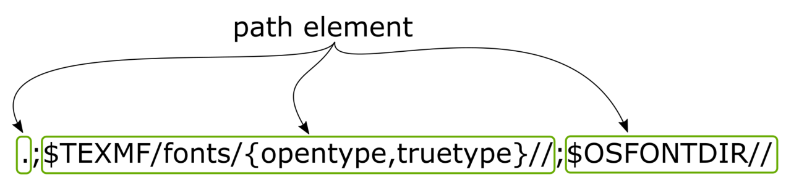
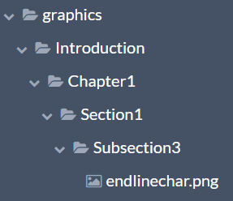
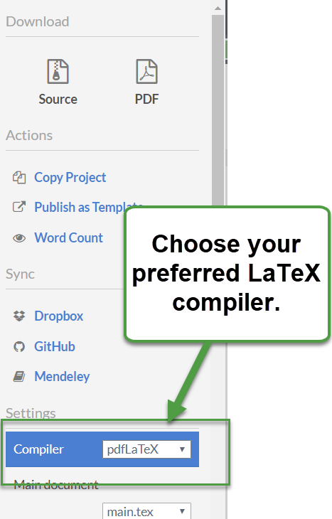
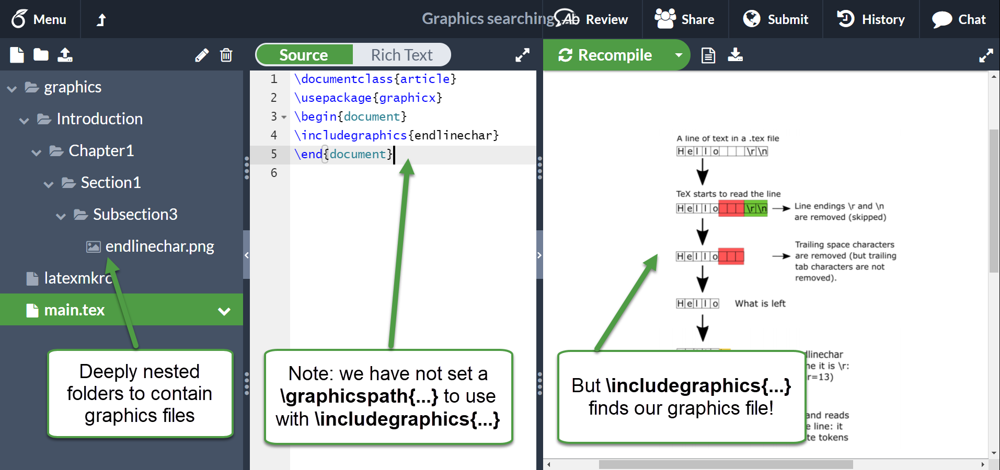

An introduction to Kpathsea and how TeX engines search for files
Introduction
This article provides an introduction to how TeX engines locate the files needed to typeset your document—using LaTeX or any other macro package. Although Overleaf relieves users from the challenges of managing a TeX installation (TeX Live), the basics of how TeX engines search for files will be of use/interest if you want to create a folder structure to help manage your Overleaf project.
Why might that be true? If you store some of your Overleaf project files inside folders then LaTeX might not find those files because, by default, the TeX engine (compiler) might not know that it needs to search those folders—thus won’t find the files they contain. To avoid this, you can create, and add to your project, a configuration file called a latexmkrc file which can be used to tell a TeX engine that your folders exist and that it should search them.
If you want to jump into an example showing a latexmkrc file, you can read this help article: How to use latexmkrc with Overleaf: examples and techniques. It might not be immediately obvious how, or why, that latexmkrc file actually works. If you’d like to know why and, perhaps, develop a better understanding for use with further configuration possibilities for your project, then read on... At the end of this article we’ll work through a practical example—using our knowledge of how TeX searches for files—to create a latexmkrc file to manage nested folders containing your graphics files.
TeX and platform independence
When Knuth created TeX, platform-independence was a central principle guiding its design and implementation and that philosophy is echoed throughout TeX’s internal operations (e.g., using integer arithmetic, “home-grown” string handling, memory management, etc). Even today, the platform independence of modern TeX-based engines still raises questions and debate on public forums; for example, see this discussion on tex.stackexchange: Are XeTeX and LuaTeX platform dependent? which contains comments and observations made by a number of well-known TeX experts.
However, for now let us put to one side the finer details and note that TeX engines do still need to be highly portable—able to work on multiple operating systems and produce “identical” results. A key aspect of portability is searching for files in a platform-independent way.
TeX engines don’t search for files… really!?
No, TeX engines don’t directly search for files by themselves. When processing a .tex file a TeX engine might identify the need to open a particular file but it delegates the task of finding it to another piece of software called Kpathsea: an external software library that is not part of the core source code of TeX engines. What Kpathsea provides is, in effect, an API (Application Programming Interface) that TeX engines (plus BibTeX, MetaPost and other applications) can call whenever they need to open a particular file: Kpathsea does the actual work of locating that file.
When Knuth wrote the original TeX engine—from which all other TeX engines are, ultimately, descended—the problem of finding/opening files was a significant challenge due, in part, to the highly disparate technology ecosystem of that time. In fact, in the source code to TeX Knuth refers to file input/output as the “bane of portability” (see page 12, section 25 of TeX: The Program).
The TeX community recognized the need to harmonize (standardize) file-searching for TeX—and TeX-related software—and decided to provide TeX with the tools to do that. To address the very thorny problem of a platform-independent method for finding files, Karl Berry, a leading member of the TeX community, wrote the software to solve the path-searching problem: a solution he named Kpathsea—which is derived from Karl’s Path Searching (see this interview with Karl Berry).
We can note that it is called Kpathsea and not Kfilesea because, as the documentation notes, it is a path-searching library. It’s important to recognize that Kpathsea is not only used by TeX engines; various TeX-related programs, including BibTeX and MetaPost, also use Kpathsea to search for input files.
In outline, whenever TeX/LaTeX macros need to open a particular file, the commands from which those macros are constructed will, eventually, be converted into low-level TeX instructions (TeX primitives) that TeX engines actually execute. If those instructions include the need to open a file, the TeX engine will call on Kpathsea saying, in effect, “please find this file”; if that Kpathsea search is successful, the file is opened. However, if Kpathsea cannot locate the file then the TeX engine will be advised of that and will stop execution to issue the infamous error ! I can't find file `...' The truth is that Kpathsea cannot find it.
Notes on LuaTeX
Strictly speaking we should caveat this section by noting that LuaTeX does offer a mechanism for the user to provide their own file-searching code through the use of callbacks. LuaTeX enables users to write functions in the Lua scripting language and register them with LuaTeX so that it will call that user-defined function at certain stages during LuaTeX’s execution—hence the term callbacks. It is a very powerful technique and the interested reader can find more information in Section 9 of The LuaTeX Reference Manual (at the time of writing, that link is for LuaTeX 1.09).
The Kpathsea configuration file: texmf.cnf
Every TeX installation contains a text file called texmf.cnf which is a configuration file used by Kpathsea: it contains numerous “config variables” which define the paths that Kpathsea will use to search for various types of file that TeX engines (or BibTeX, MetaPost etc) might need. As we’ll see below, those “config variables” define search paths constructed from so-called path-elements: using various constructs, variables and parameters to define each path element as a “template” that Kpathsea processes to generate the actual, physical, directories to search.
Just to give a concrete example, here’s one such config variable which defines the search paths for OpenType fonts—for now, don’t worry about the meaning of this path’s construction:
OPENTYPEFONTS = .;$TEXMF/fonts/{opentype,truetype}//;$OSFONTDIR//
All that’s important here is that the file texmf.cnf (read by Kpathsea) defines a config variable called OPENTYPEFONTS which is used to define the path(s) that Kpathsea will use to search for OpenType fonts. The right-hand side of the “=” does not look like any path you see on a typical device because it is constructed using various variables and parameters to define each path as a “template” or “blueprint” that Kpathsea will use to generate real directories to search.
Kpathsea’s concept of a “path”
Perhaps the central concept to grasp is Kpathsea’s notion of a “path”: the basic construct that Kpathsea uses to work out where a particular file is located. As we saw in the OPENTYPEFONTS example above, Kpathsea’s notion of a path looks very different to paths we’re accustomed to using on our desktop or portable devices.
To quote from Kpathsea’s documentation:
... a search path is a colon-separated list of path elements, which are directory names with a few “extra frills”.
—but note that a semi-colon (;) is also used to separate path elements. Later, we’ll briefly indicate the nature of some of those “extra frills”.
In our OPENTYPEFONTS example there are three path elements, each delimited using semi-colon (;):

.(meaning the current directory)$TEXMF/fonts/{opentype,truetype}//$OSFONTDIR//
Note that a double-slash (//) in a path element means search subdirectories (recursively).
A typical texmf.cnf file will contain numerous “config variables” to define search paths for the file types that Kpathsea can search for.
Kpathsea: A very brief overview
Kpathsea is a sophisticated library—with many fine details and nuances—and even a brief glance at its documentation makes it clear that we can’t delve into all the details. However, we can try to provide an overview of what it does—to help orientate your thinking and offer a starting point for further reading.
Kpathsea’s core purpose
As noted in the documentation, Kpathsea’s fundamental purpose is “to return a filename from a list of directories specified by the user” and that those directories (search paths) are specified using “a few extra frills”.
Those “extra frills”
The “few extra frills” mentioned above include various parameters and variables that Kpathsea uses to construct its search paths (or “path templates”) so that is can define paths in a more general way. When a TeX engine is actually running (executing), Kpathea can use the current value of those parameters/variables to work out the actual paths by replacing those variables with their actual (runtime) values. You can easily identify those variables (within path elements) because they start with a $ sign.
Thus, we say that Kpathsea expands a path element, meaning it transforms those parameters and variables: turning a path “template” into the actual name(s) of one or more physical directories in which to look for a file. This offers a great deal of flexibility and means that Kpathsea might construct a list of directories corresponding to an individual path element—for example, if it is told to search subdirectories.
Our OpenType example revisited
We’ll pull together the various threads and explore OPENTYPEFONTS in a little more detail:
OPENTYPEFONTS = .;$TEXMF/fonts/{opentype,truetype}//;$OSFONTDIR//
Let’s consider the two path elements $TEXMF/fonts/{opentype,truetype}// and $OSFONTDIR//. Here, Kpathsea notices the use of braces {...} and treats $TEXMF/fonts/{opentype,truetype} as representing two path elements:
$TEXMF/fonts/opentype//$TEXMF/fonts/truetype//
and that the subdirectories of both those path elements should also be searched (indicated by the trailing //).
Note: See the Kpathsea documentation on subdirectory expansion for an important caveat on the order in which subdirectories, at any level, are searched (it is is unspecified).
We’ll make a few observations on $TEXMF below.
$OSFONTDIR//
$OSFONTDIR is a variable whose value should be defined as an environment variable containing the location where fonts are stored: the exact value will, of course, depend on the operating system being used to run TeX. Note that, here, the trailing // instructs Kpathsea to search subdirectories when looking for OpenType fonts.
The default definition of OSFONTDIR within texmf.cnf is:
OSFONTDIR = /please/set/osfontdir/in/the/environment
So it is certainly something you need to set if you wish to use it—your environment variable will override this “placeholder” definition contained in texmf.cnf.
If you do set the environment variable OSFONTDIR then, at runtime, wherever Kpathsea sees $OSFONTDIR as part of a path element (in texmf.cnf) it can replace the variable $OSFONTDIR with the actual value stored in the environment variable OSFONTDIR. Remember, that when using it within texmf.cnf path elements we specify the variable $OSFONTDIR—with a leading $—to tell Kpathsea this is a variable whose value it needs to use.
Brief notes on $TEXMF
TEXMF is another config variable that is defined in texmf.cnf; for example, in the master TeX Live distribution you would see:
TEXMF = {$TEXMFAUXTREES$TEXMFCONFIG,$TEXMFVAR,$TEXMFHOME,!!$TEXMFLOCAL,!!$TEXMFSYSCONFIG,!!$TEXMFSYSVAR,!!$TEXMFDIST}
You don’t need to be concerned with the details of this definition of TEXMF—we won’t explore all the details, but simply note that the $TEXMF variable is used within path elements because it defines a series of top-level folders (referred to as “texmf trees”) from where you can start the search for files.
TEXMF is extremely useful if you want, or need, to split a TeX installation across multiple directories (or directory “trees”). For example, having a main or master collection of TeX/LaTeX packages (e.g., TeX Live) and another collection of files and folders used to store local LaTeX packages—or, perhaps, used to store local config files or customized versions of standard packages. Splitting the TeX installation in this way can make it easier to manage upgrading the main/master collection (distribution) of TeX/LaTeX packages because your local collection is separated from the master files which are updated when you upgrade your TeX Live distribution/installation.
For further details on managing more complex TeX installations, the interested reader is referred to these two papers:
- Managing Multiple TDS Trees by Michael J Downes;
- Juggling texmf trees by Siep Kroonenberg.
TeX Directory Structure
Anyone who has managed a TeX installation knows that modern TeX systems, such as TeX Live, contain many tens of thousands of files comprising a huge range of file types. The TeX Directory Structure (TDS) was designed as a best practice “blueprint” for organizing the vast collection of files in a working TeX installation and is strongly recommended for use with Kpathsea.
For further information the reader is directed to the TDS specification: A Directory Structure for TeX Files.
Kpathsea file types
The suite of applications which use Kpathsea need to access a broad range of file types so Kpathsea uses a “config variable” to identify the path(s) for each type of file (or group of files) it supports. The online documentation has a complete list (see also our summary table, below) but here are the “config variables” for the more common file types:
| Config variable | File type examples |
| TEXINPUTS | TeX source files and figure/graphics files |
| BIBINPUTS, BSTINPUTS | BibTeX bibliography source files |
| TTFONTS | TrueType outline fonts |
| OPENTYPEFONTS | OpenType outline fonts |
TEXINPUTS is an especially important config variable because it specifies where a TeX engine obtains its input source files. Note that image files are considered input files and can also be searched for using the path defined by TEXINPUTS.
Some Kpathsea nuances
As noted, Kpathsea has many nuances which we can’t explore here in any detail. However, here are features that some readers may wish to explore:
- filename database: To minimize disk searches Kpathsea can make use of an “externally-built filename database file named ls-R that maps files to directories”. TeX Live provides one and the tools to update it if new files are added.
- environment variables: In addition to “config variables” (such as
OPENTYPEFONTS) Kpathsea also makes clever use of environment variables; for example, the runtime value of environment variables can used to define path elements in thetexmf.cnffile (possibly to override variables of the same name that are defined intexmf.cnf). - program name: A subtle but essential aspect of Kpathsea’s behaviour is that it can make use of the name of the executable program (e.g., the TeX engine) to construct program-specific search-path constructions. This gives considerable flexibility because path searching can be directed to files for a particular TeX engine. For example, for LuaTeX/LuaLaTeX:
TEXINPUTS.lualatex = .;$TEXMF/tex/{lualatex,latex,luatex,generic,}// TEXINPUTS.luatex = .;$TEXMF/tex/{luatex,plain,generic,}// - finding
texmf.cnf: A question you may be asking is how does Kpathsea know wheretexmf.cnfis stored? The answer is an environment variable calledTEXMFCNF. This needs to be set (on the device/platform running TeX) to the path wheretexmf.cnfis stored.
Debugging Kpathsea problems
Users of Overleaf are unlikely to need these facilities but we list them for completeness:
- kpsewhich: A standalone program (included in TeX Live) that can be used to test your settings: determine the value of variables and find files. Interested readers are referred to the online documentation for further information.
- environment variables: Kpathsea supports an environment variable called
KPATHSEA_DEBUGto assist with debugging its behaviour. You can setKPATHSEA_DEBUGto different values depending on how much debug information you need. SettingKPATHSEA_DEBUG=-1will generate a substantial amount of data.
And finally: folders, figure files and latexmkrc
So, how does the above relate to latexmkrc? If you read this article How to use latexmkrc with Overleaf: examples and techniques you can see that the (Perl) code in the latexmkrc example sets the value of an environment variable TEXINPUTS:
$ENV{'TEXINPUTS'}='./tex//:' . $ENV{'TEXINPUTS'};
Note that the colon (:) used here (./tex//:) is extremely important. If you omit that colon then TeX/LaTeX may be unable to find vital system files, such as LaTeX packages!
What this latexmkrc file does, in effect, is add a top-level folder path (./tex in the example above) to the system-defined TEXINPUTS environment variable so that when Kpathsea uses the variable $TEXINPUTS it will then be aware that the folder /tex// should be searched to find input files. If you look carefully, you’ll see that the actual path used is ./tex//: the // tells Kpathsea to search the tex folder recursively—i.e., look into any sub-folders contained in the tex folder. As noted, we also added the important colon character.
We can use exactly the same technique for figure files.
An aside on BibTeX
As noted, the BibTeX program also uses Kpathsea to search for its input files; in particular:
- the
BSTINPUTSconfig variable (search path) is used to search for.bstfiles; - and the
BIBINPUTSconfig variable (search path) will be used to search for.bibfiles.
If you add new .bst or .bib files to your Overleaf project you can use the technique below to instruct BibTeX where to find these files—you need to replace TEXINPUTS with BSTINPUTS and/or BIBINPUTS.
TEXINPUTS and using nested folders for graphics files
If your project has a lot of graphics files it can be convenient to create a set of folders in which to store and manage them. For example, the following screengrab shows a section of an Overleaf project that uses a top-level folder called graphics:

There are numerous (nested) sub-folders containing graphics for various sections of our document.
Suppose we have the above folder structure and want to use the graphicx package (\usepackage{graphicx}) and that we try to do so like this:
\documentclass{article}
\usepackage{graphicx}
\begin{document}
\includegraphics{endlinechar}% best practice is not to use the file extension
\end{document}
It won’t work and you’ll get an error like this:
! LaTeX Error: File `endlinechar' not found.
l.4 \includegraphics{endlinechar}
I could not locate the file with any of these extensions:
.pdf,.PDF,.ai,.AI,.png,.PNG,.jpg,.JPG,.jpeg,.JPEG,.jp2,.JP2,.jpf,.JPF,.bmp,.BMP,
,.ps,.PS,.eps,.EPS,.mps,.MPS,.pz,.eps.Z,.ps.Z,.ps.gz,.eps.gz
That error arises because our graphics file is stored in a location that TeX/LaTeX (and Kpathsea) are unaware of, and thus cannot find it—the path to the graphics file is:
./graphics/Introduction/Chapter1/Section1/Subsection3/endlinechar.png
Note: It is generally accepted best practice to avoid space characters in the folder names. Whilst it is certainly possible to have spaces in folder names, using the techniques discussed below, we would caution against doing so for reasons of document portability outside the Overleaf platform.
As explained in this Overleaf help article you can, of course, use folders to store your graphics but you need to tell LaTeX where they are stored. Here, we’ll look at two solutions:
- Using the \graphicspath command;
- Using our knowledge of Kpathsea and
TEXINPUTS.
Using \graphicspath
The graphicx package provides the \graphicspath command that you can use to declare paths where your graphics are located; so we could do something like this:
\graphicspath{{./graphics/Introduction/Chapter1/Section1/Subsection3/}}
and LaTeX will now find any graphics stored under that path.
Note: If you must have spaces in folder names then you will need to enclose the paths in double quotes ("..."):
\graphicspath{{"./graphics/Introduction/Chapter 1/Section 1/Subsection 3/"}}
Note: You can declare multiple paths like this:
\graphicspath{{path1}{path2}{path3}...{pathN}}
where ... means additional paths enclosed in braces.
Note: We start the path with ./graphics and not just /graphics. The dot (.) tells the operating system that the path is relative to the current working directory.
The \graphicspath command works well but if you have many folders it can become quite tedious to add every path; additionally, paths defined via \graphicspath would no longer work if you renamed the folders or re-structured them. Is there any easier way? Yes, you can use a latexmkrc file!
\graphicspath and recursion (subdirectories)
Note that there are online discussions/debates on whether some systems support/enable \graphicspath to recursively search subdirectories if you add // at the end of the path: see, for example, these discussions on tex.stackexchange:
For greatest compatibility you should assume that \graphicspath does not support recursive directory searching.
Kpathsea and TEXINPUTS (latexmkrc file to the rescue)
CAVEAT: Note that the following technique works well on Overleaf and suitably-configured local TeX installations; but if you use a latexmkrc file your project may become incompatible with other TeX installations, such as those used by publishers and online journal submission systems. Third-party TeX installations may, or may not, support or allow the use of latexmkrc. If you need to export your Overleaf project for use elsewhere, or want to submit it to a journal, you should remove any space characters from the path names and, for improved compatibility, add a \graphicspath command which defines all the paths:
\graphicspath{{path1}{path2}{path3}...{pathN}}
where ... means additional paths enclosed in braces.
The technique discussed below (using TEXINPUTS) has been tested successfully on Overleaf with the pdfTeX, XeTeX and LuaTeX engines (i.e., the pdfLaTeX, XeLaTeX and LuaLaTeX compiler options in the Overleaf menu):

Going back to our example, we want to use this code (with deeply nested folders) and we’ll use a latexmkrc file to achieve it:
\documentclass{article}
\usepackage{graphicx}
\begin{document}
\includegraphics{endlinechar}% best practice is not to use the file extension
\end{document}
Here’s a screenshot showing the above code working without problems: LaTeX has found our graphics file (endlinechar.png) even though it is in a deeply nested folder structure (without any spaces in the folder names).

So, how did we do this? All you need to do is:
- create a new file, without an extension, and call it latexmkrc;
- add the following line to that file:
$ENV{'TEXINPUTS'}='./graphics//:'.$ENV{'TEXINPUTS'};
Kpathsea will now know about the folders contained under graphics and because of the // it will look into the sub-folders too.
Note, again, that the colon in ./graphics//: is actually extremely important. If you omit that colon then TeX/LaTeX may be unable to find vital system files, such as LaTeX packages!
Using the simple project example above, you can now compile it and voila! LaTeX finds your graphics file—and you can rename or re-organize the folders under /graphics and it won’t prevent LaTeX from finding them.
Table listing Kpathsea “config variables”
The following table is a summary derived from data listed in the Kpathsea documentation.
| Kpathsea config variable | File type description | File suffix |
| AFMFONTS | Adobe font metrics | .afm |
| MFBASES, TEXMFINI | Metafont memory dump | .base |
| BIBINPUTS, TEXBIB | BibTeX bibliography source | .bib |
| BLTXMLINPUTS | BibLaTeXML bibliography files for Biber | .bltxml |
| BSTINPUTS | BibTeX style | .bst |
| CLUAINPUTS | dynamic libraries for Lua | .dll and .so |
| CMAPFONTS | character map files | .cmap |
| TEXMFCNF | Runtime configuration files | .cnf |
| CWEBINPUTS | CWEB input files | .w, .web, .ch |
| TEXCONFIG | Dvips 'config.*' files, such as config.ps | |
| ENCFONTS | encoding vectors | .enc |
| TEXFORMATS, TEXMFINI | TeX memory dump | .fmt |
| FONTCIDMAPS | CJK mapping | .cid |
| FONTFEATURES | primarily for OpenType font features | .fea |
| FONTS, GFFONTS, GLYPHFONTS, TEXFONTS | generic font bitmap | .gf |
| TEXPICTS, TEXINPUTS | Encapsulated PostScript figures | .eps, .epsi |
| TEXINDEXSTYLE, INDEXSTYLE | makeindex style files | .ist |
| LIGFONTS | ligature definition files | .lig |
| TEXMFDBS | Filename databases | |
| TEXFONTMAPS | Fontmaps | .map |
| MPMEMS, TEXMFINI | MetaPost memory dump | .mem |
| MPSUPPORT | MetaPost support files, used by DMP | |
| MFINPUTS | Metafont source | .mf |
| MFPOOL, TEXMFINI | Metafont program strings | .pool |
| MFTINPUTS | MFT style file | .mft |
| MISCFONTS | font-related files that don't fit the other categories | |
| MLBIBINPUTS, BIBINPUTS, TEXBIB | MlBibTeX bibliography source | .mlbib, .mlbib |
| MLBSTINPUTS, BSTINPUTS | MlBibTeX style | .mlbst, .bst |
| MPINPUTS | MetaPost source | .mp |
| MPPOOL, TEXMFINI | MetaPost program strings | .pool |
| OCPINPUTS | Omega compiled process files | .ocp |
| OFMFONTS, TEXFONTS | Omega font metrics | .ofm, .tfm |
| OPENTYPEFONTS | OpenType fonts | |
| OPLFONTS, TEXFONTS | Omega property lists | .opl |
| OTPINPUTS | Omega translation process files | .otp |
| OVFFONTS, TEXFONTS | Omega virtual fonts | .ovf |
| OVPFONTS, TEXFONTS | Omega virtual property lists | .ovp |
| PDFTEXCONFIG | PDFTeX-specific configuration files | |
| PROGRAMFONTS, PKFONTS, TEXPKS, GLYPHFONTS, TEXFONTS | packed bitmap fonts | .pk |
| TEXPSHEADERS, PSHEADERS | downloadable PostScript | .pro |
| RISINPUTS | RIS bibliography files, primarily for Bibe | .ris |
| SFDFONTS | subfont definition files | .sfd |
| TEXINPUTS | TeX source | .tex |
| TEXDOCS | Documentation files for the TeX system | |
| TEXSOURCES | Source files for the TeX system | |
| TEXMFSCRIPTS | Architecture-independent executables distributed in the texmf trees | |
| TEXPOOL, TEXMFINI | TeX program strings | .pool |
| TFMFONTS, TEXFONTS | TeX font metrics | .tfm |
| TRFONTS | Troff fonts | |
| TTFONTS | TrueType outline fonts | .ttf, ,TTF, .ttc, .TTC, .dfont |
| T1FONTS, T1INPUTS, TEXPSHEADERS, DVIPSHEADERS | Type 1 PostScript outline fonts | .pfa, .pfb |
| T42FONTS | Type 42 PostScript outline fonts | |
| VFFONTS, TEXFONTS | virtual fonts | .vf |
| WEBINPUTS | WEB input files | .web, .ch |
| WEB2C | files specific to the web2c implementation |
Overleaf guides
- Creating a document in Overleaf
- Uploading a project
- Copying a project
- Creating a project from a template
- Using the Overleaf project menu
- Including images in Overleaf
- Exporting your work from Overleaf
- Working offline in Overleaf
- Using Track Changes in Overleaf
- Using bibliographies in Overleaf
- Sharing your work with others
- Using the History feature
- Debugging Compilation timeout errors
- How-to guides
- Guide to Overleaf’s premium features
LaTeX Basics
- Creating your first LaTeX document
- Choosing a LaTeX Compiler
- Paragraphs and new lines
- Bold, italics and underlining
- Lists
- Errors
Mathematics
- Mathematical expressions
- Subscripts and superscripts
- Brackets and Parentheses
- Matrices
- Fractions and Binomials
- Aligning equations
- Operators
- Spacing in math mode
- Integrals, sums and limits
- Display style in math mode
- List of Greek letters and math symbols
- Mathematical fonts
- Using the Symbol Palette in Overleaf
Figures and tables
- Inserting Images
- Tables
- Positioning Images and Tables
- Lists of Tables and Figures
- Drawing Diagrams Directly in LaTeX
- TikZ package
References and Citations
- Bibliography management with bibtex
- Bibliography management with natbib
- Bibliography management with biblatex
- Bibtex bibliography styles
- Natbib bibliography styles
- Natbib citation styles
- Biblatex bibliography styles
- Biblatex citation styles
Languages
- Multilingual typesetting on Overleaf using polyglossia and fontspec
- Multilingual typesetting on Overleaf using babel and fontspec
- International language support
- Quotations and quotation marks
- Arabic
- Chinese
- French
- German
- Greek
- Italian
- Japanese
- Korean
- Portuguese
- Russian
- Spanish
Document structure
- Sections and chapters
- Table of contents
- Cross referencing sections, equations and floats
- Indices
- Glossaries
- Nomenclatures
- Management in a large project
- Multi-file LaTeX projects
- Hyperlinks
Formatting
- Lengths in LaTeX
- Headers and footers
- Page numbering
- Paragraph formatting
- Line breaks and blank spaces
- Text alignment
- Page size and margins
- Single sided and double sided documents
- Multiple columns
- Counters
- Code listing
- Code Highlighting with minted
- Using colours in LaTeX
- Footnotes
- Margin notes
Fonts
Presentations
Commands
Field specific
- Theorems and proofs
- Chemistry formulae
- Feynman diagrams
- Molecular orbital diagrams
- Chess notation
- Knitting patterns
- CircuiTikz package
- Pgfplots package
- Typesetting exams in LaTeX
- Knitr
- Attribute Value Matrices
Class files
- Understanding packages and class files
- List of packages and class files
- Writing your own package
- Writing your own class